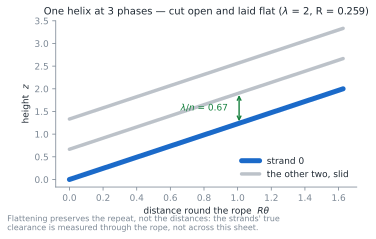
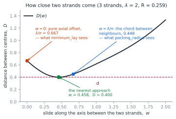
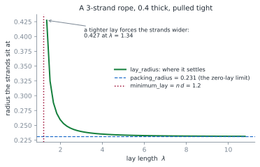

The shape of a laid rope
A rope is the one braid in braidpy whose shape can be written down. This page says what the shape is, where each formula comes from, and — since it matters for reading the code — which of them is exact and which is a search.
Everything here lives in braidpy.annulus_braid.
A rope has no crossings
On a ring of slots there are two kinds of move. A crossing puts two neighbouring strands past each other, one passing outside the other. A turn carries every strand round one slot together — nobody passes anybody.
Laying up a rope is turns, and only turns:
from braidpy.annulus_braid import rope, tubular_paths
paths = tubular_paths(rope(3), 3)
assert all(sign == 0 for path in paths for sign in path.signs)
Every sign is zero: no strand is outside or inside any other at any step. That is what separates a rope from a braid, and it is the reason a rope has a shape anyone can write down. The strands never have to get past one another, so their shape is a one-parameter family — helices of radius \(R\) — and symmetry says where they touch without anyone having to search a surface for it.
The strands are one curve, repeated
In an evenly laid rope, strand \(k\) is strand 0 slid along the axis by \(k\) n-ths of a lay. The strands are not merely alike; they are the same curve at \(n\) phases.

The picture is the rope’s surface cut down one side and laid flat, which is the view where a helix becomes a straight line and the repeat is obvious. Be careful reading distances off it: flattening preserves the repeat but not the clearances, which are measured through the rope rather than across the sheet.
That one fact — one curve, repeated — is what every formula below rests on.
Nothing holds the strands out
The radius is not something you choose. A helix of smaller radius is shorter, so tension pulls the strands inward, and what stops them is each other. The radius is an output: the value at which they just touch.
So the question is only ever “how close do two of them come?”.
How close two strands come
Because the strands are one helix repeated, the distance between two of them depends on a single variable: how far along the axis one is slid relative to the other. Call that \(w\). Then
The first term is the chord across the circle between two points whose angles
differ by \(2\pi w/\lambda\); the second is what remains of the axial offset
after sliding by \(w\). Their clearance is this minimised over \(w\) — one
variable, no surface to search. helix_clearance()
scans it and then refines by golden section.

Two points on that curve have names, and the figure’s point is that neither of them is the answer:
Where |
What it is |
Which function sees it |
|---|---|---|
\(w = k\lambda/n\) |
the chord between neighbours at equal height |
|
\(w = 0\) |
the pure axial offset \(\lambda/n\) |
|
in between |
the actual nearest approach |
A strand’s nearest neighbour is not alongside it. It is a little further along the neighbour’s other turn.
The two bounds
packing_radius() is the familiar
cross-section answer, \(R = d / (2\sin(\pi/n))\): evenly spaced round a circle,
neighbours touch when the chord between them is one diameter. It is exact —
for strands that run straight. Give the rope any lay at all and the strands
come closer than it says, because winding brings a strand nearer to its
neighbour’s other turns. At the tightest lay they can be made at,
three strands at the packing radius clear 0.76 of a diameter, and the
shortfall barely eases with more strands — 0.71 at twelve.
minimum_lay() is the other bound,
and it follows directly from the repeat. Take a point on one strand and the matching point on another: they are at the same place across the rope and differ only by \(\lambda/n\) of height. Widening the rope does not separate them, because they are the same point of the same curve. Below \(n d\) no radius keeps the strands apart and the rope cannot be made.
Note what that argument needs: the evenness, not ropes in general. A rope whose strands differ from one another is outside it. The bound is also not attained — clearing a diameter at it would take an infinite radius — and it is rarely what bites first. Crowding round the circle usually does. Its use is that it is cheap and exact.
Where the rope settles
lay_radius() puts the two together. The
clearance rises with the radius, so bisection finds where it equals a
diameter, bracketed below by the packing radius.

The curve is the whole story: at a long lay the rope approaches the packing radius from above, and as the lay tightens towards \(n d\) the radius runs away to infinity. A tighter rope is a fatter one.
from braidpy.annulus_braid import lay_radius, packing_radius
packing_radius(3, 0.4) # 0.231 — the zero-lay limit
lay_radius(3, 0.4, lay=2.0) # 0.259 — where it actually settles
lay_radius(3, 0.4, lay=1.34) # 0.432 — a tight lay, much fatter
Why this one is a search
It is worth being explicit, because the braided tube next door does have a closed form. The difference is where the nearest approach sits.
A crossing of a braided tube is a point of symmetry for both strands, so it is automatically a critical point of the distance between them, and only the second-order behaviour around it matters — which is algebra. Two helices of a rope have no such point. Their nearest approach is not where the chord between them is, as the \(D(w)\) figure shows, and its location moves with the lay. There is nothing to expand around.
Concretely, the minimum of \(D(w)\) is where its derivative vanishes, which for neighbouring strands reads
— a transcendental equation, with \(w\) inside a sine on one side and linear on
the other. It has no closed-form root, which is why
lay_radius() bisects.
So lay_radius() bisects. The problem is
well-posed and the answer is exact to tolerance; it simply is not a formula.
The general version of this argument is in
Why a braid’s shape has no closed form.
See also
The shape of a braided tube — the same questions where there are crossings, and where the radius does come out in closed form.
rope_helices()builds the curves themselves.closest_approach()measures the clearance of any set of strands numerically, which is how the formulas above are checked in the tests.